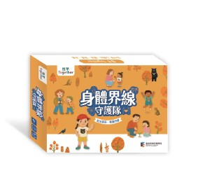
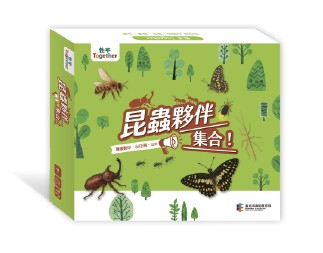
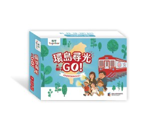

十年里程碑，三款性別平等桌遊正式發表。透過遊戲化教育，讓身體自主、尊重差異、自我認同的核心概念成為孩子生活的一部分。
教材研發與深耕
正式發行量
公私立幼兒園配發

透過生活中常見的情境練習，引導幼兒學會表達感受、勇敢拒絕與尋求協助，建立自我保護策略。

一起找昆蟲、認識差異，理解興趣與能力不受性別限制，在遊戲中練習相互欣賞與支持。

收錄 16 位人物生命故事，帶領幼兒突破性別刻板印象，看見無限可能，遇見榜樣的力量。